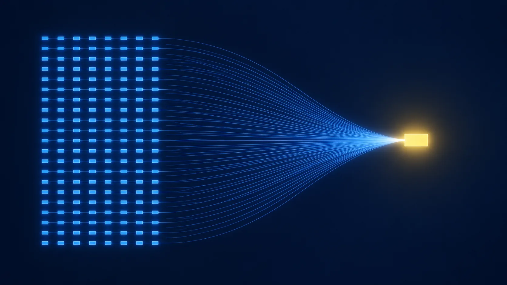
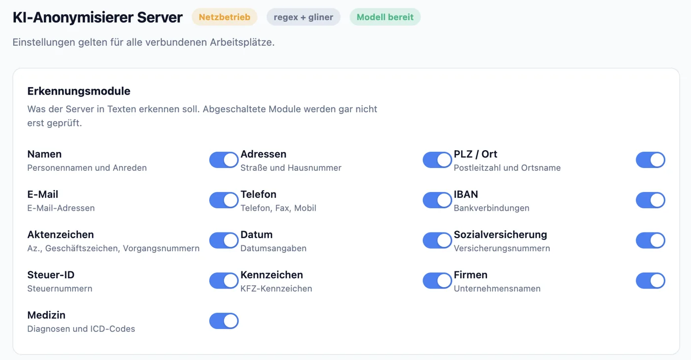
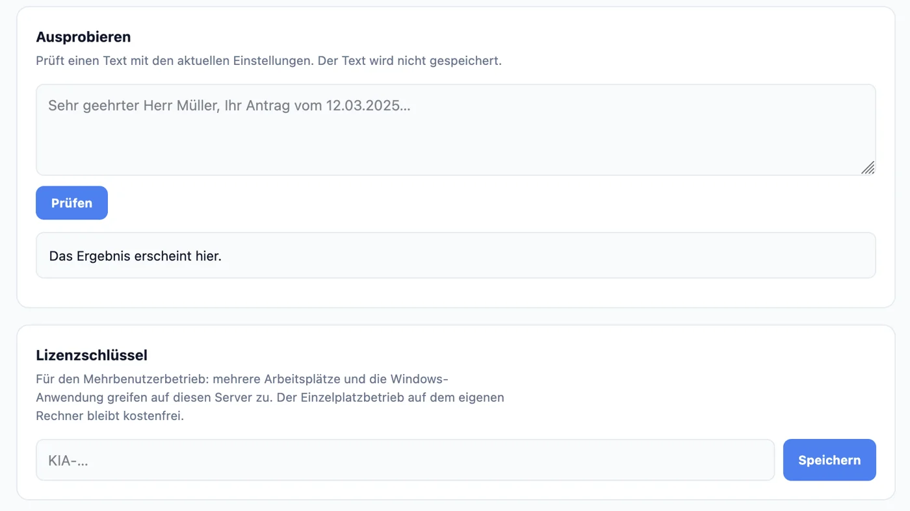
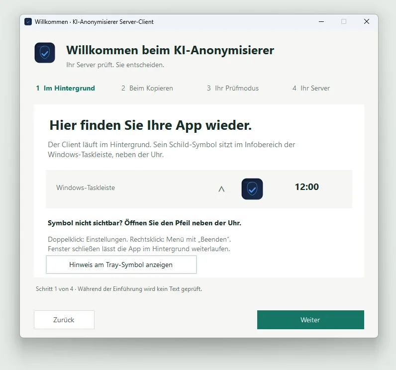
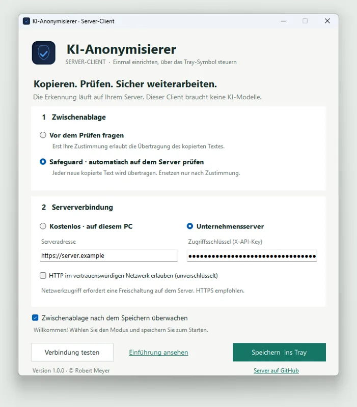

Server & Client · für Teams, KMU und Behörden
Eine Erkennung für alle Arbeitsplätze.
KI-Anonymisierer Server stellt Regeln und modellgestützte Erkennung zentral bereit, als selbst betriebener Docker-Dienst. Windows-Client, Chrome-Erweiterung und eigene Anwendungen nutzen ihn über eine gemeinsame API.
- Docker
- Regeln + GLiNER
- HTTP-API
- Selbst betrieben

So arbeiten Client und Server zusammen.
Server betreiben
Den Docker-Dienst in Ihrem Netz starten, Erkennungsmodule wählen und eigene Begriffe pflegen.
Clients verbinden
Serveradresse und Zugriffsschlüssel im Windows-Client hinterlegen. Der Schlüssel wird mit Windows-DPAPI verschlüsselt gespeichert.
Kopieren und zustimmen
Der Client fragt standardmässig, bevor ein kopierter Text an den Server geht.
Bestätigen und ersetzen
Der Client zeigt die Zahl der Treffer. Erst Ihre Bestätigung ersetzt sie durch Platzhalter.
Was Server und Client mitbringen
Selbst betrieben
Docker-Dienst in Ihrer Infrastruktur, nicht in einer fremden Cloud.
Regeln plus GLiNER
Regelbasierte Erkennung, wahlweise ergänzt durch ein spezialisiertes Modell, ohne Chatbot-Oberfläche.
Zentral gepflegt
Erkennungsmodule und eigene Begriffe in einer Browseroberfläche, inklusive Testtexten.
Offene API
Liefert Fundstellen mit Kategorie und Position, für Windows-Client, Chrome und eigene Integrationen.
Windows-Client, kostenlos
Tray-App ohne eigene KI-Modelle, fragt vor Übertragung und Ersetzen, optional mit Safeguard. Kostenlos im Microsoft Store.
Keine Modelle pro PC
Die Modellinstallation erfolgt einmal auf dem Server statt auf jedem Arbeitsplatz.
Die Server-Oberfläche
Erkennungsmodule, eigene Begriffe, ein Testfeld und der Lizenzschlüssel, zentral für alle verbundenen Arbeitsplätze.


Der Windows-Client
Die Tray-App für den Arbeitsplatz. Sie braucht keine eigenen KI-Modelle, die Erkennung läuft auf Ihrem Server.
Kostenlos im Microsoft Store laden


- Standardmässig Nachfrage, bevor ein kopierter Text an den Server geht
- Optional Safeguard: neue Kopien automatisch prüfen, Ersetzen bleibt zustimmungspflichtig
- Kostenlos auf demselben PC oder mit Ihrem Unternehmensserver
- Zugriffsschlüssel mit Windows-DPAPI geschützt, Builds für x64 und ARM64
Transparenz zur Datenverarbeitung
Im Servermodus wird der Originaltext zur Analyse an Ihren konfigurierten Server übertragen. Laut Server-Dokumentation werden dort keine Klartexte gespeichert. Betriebsprotokolle, vorgeschaltete Komponenten und eine korrekt eingerichtete HTTPS-Verbindung sind beim eigenen Betrieb zu berücksichtigen. Der Client verarbeitet derzeit Text und bietet keine Rückführung.
Häufige Fragen
Kann ich den Server vorher testen?
Ja, 30 Tage kostenlos. Mit dem Testzugang prüfen Sie die Erkennung an eigenen Beispieltexten, ohne Installation, über die Chrome-Erweiterung und unseren Testserver. Bitte nur erfundene Daten verwenden: Für den Testzugang besteht kein Vertrag über die Auftragsbearbeitung.
Brauchen 200 Arbeitsplätze 200 KI-Installationen?
Nein. Mit dem Server wird die Erkennung zentral bereitgestellt. Wie gross die Installation sein muss, hängt von Textmengen, Antwortzeiten und gleichzeitigen Anfragen ab.
Liefert die API fertig anonymisierten Text?
Nein. Die API liefert Fundstellen mit Kategorie und Position. Der angebundene Client erzeugt daraus die Platzhalter.
Was kostet der Server?
Die lokale Einzelplatznutzung ist kostenfrei. Für den Netzwerk- und Mehrbenutzerbetrieb gibt es Lizenzen nach Nutzerzahl, zum Beispiel EUR 990.– pro Jahr für 25 Nutzer. Weitere Staffeln und unbefristete Lizenzen auf Anfrage. Es gilt die Server-EULA.
Installiert der Client Docker oder den Server?
Nein. Ein laufender KI-Anonymisierer Server ist Voraussetzung, lokal auf demselben PC oder im Netzwerk.